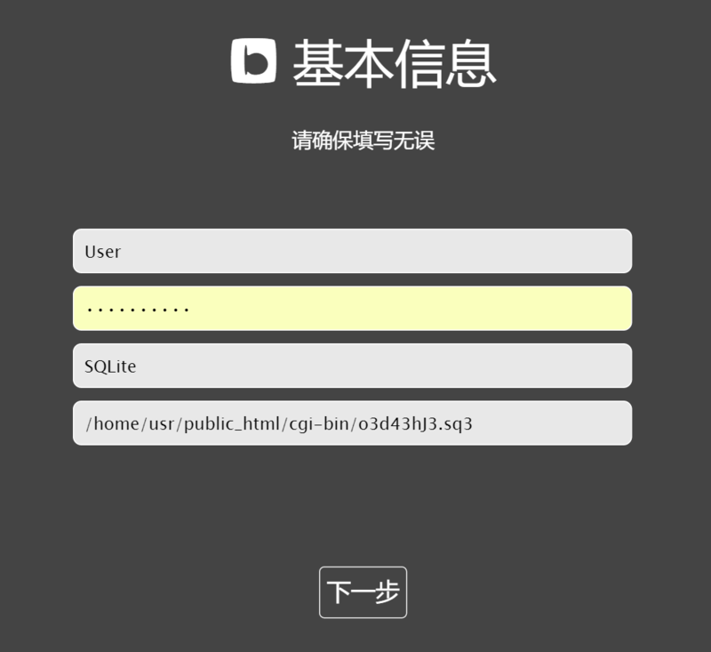

安装指南
bo-blog Wind （下称 bW）是一个以轻量、便携为开发宗旨的 PHP 博客引擎。欢迎使用 bW 搭建您的个人博客，让我们跟着下面的流程马上开始吧。
运行环境
bW 的运行需求如下：
PHP 5.3.0 以上
PHP 启用 PDO 扩展和 cURL 扩展
MySQL 或 SQLite 数据库
获取程序安装包
您可通过多种途径获得安装包。
通过 Composer 获取安装包
如果您的系统中已经安装了 Composer， 您可以通过 composer 直接安装 bW。
composer create-project bo-blog/bw /www/bw
以上命令可以将 bW 的最新版安装到 /www/bw 目录下。
通过 git 获取安装包
git clone https://github.com/bo-blog/bw.git
手动获取安装包
到 GitHub 、Coding 或者 bW 官网下载最新的安装包。将下载得到的安装包解压，完整上传到服务器的安装路径下。
运行安装程序
对于 Linux 服务器，请在开始安装前，将安装路径下的所有文件和目录递归地授予可读写权限，例如 chmod -R 777 /www/bw/ 。这是为了允许安装和运行过程中写入设置文件，以及后续通过自动更新功能自动完成程序升级。
然后，您就可以在浏览器里输入安装路径的 URL 了。

通过浏览器访问程序路径，会自动跳转到安装程序，以引导您完成安装。
整个安装过程是非常直观的，您只需按照屏幕上的提示一步步执行下去即可。
安装过程中，点击 SQLite 按钮可以在 SQLite （推荐）和 MySQL 数据库之间切换。选用 SQLite 数据库时，会自动创建数据库文件，我们建议将数据库创建在无法用 http 直接访问到的路径，且随机命名，如图一所示。

如果一切顺利，安装就可以完成。
首次进入安装完毕的博客后，建议马上点击右下角的管理按钮，到参数设置中调整一些设置。